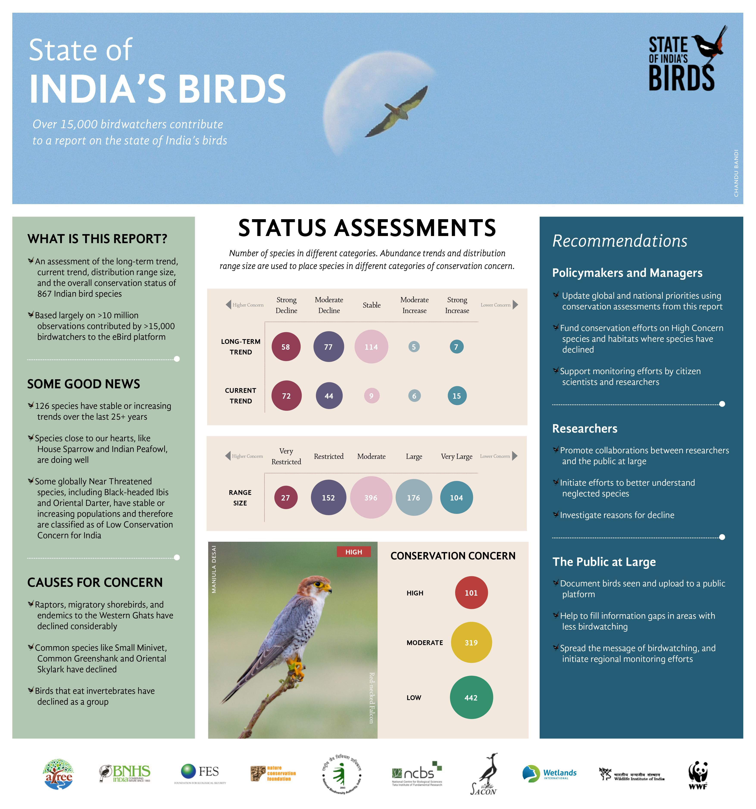

The Report
The State of India's Birds report is the first comprehensive assessment of the distribution range, trends in abundance, and conservation status for most of the bird species that regularly occur in India. With their ubiquity and ecological importance, birds are excellent indicators of the state of our natural world and are potent cultural symbols of nature. This national-level assessment of birds is a significant step forward in the monitoring and conservation of India's rich and varied biodiversity.
The State of India's Birds report was created to assess the conservation status of the majority of species that regularly occur in the country. Worldwide, common and widespread species are declining; but in India, lack of information has meant that conservation attention has been focussed on only a few species (usually large, charismatic and threatened).
